10+ hours saved weekly
·
3x faster lead response
·
Zero manual data entry
·
24/7 automated support
·
Scale your impact
·
90% less repetitive work
·
I eat, sleep, and breathe AI automation so you can focus on strategy and growth.
While others complicate AI with buzzwords and theories, I simplify it into systems that actually work in your business.
The result? You reclaim those 60-hour weeks and finally have time for what matters—growing your company, not drowning in it.
Most try. Few do it right.
Here's what that looks like.
HOW MOST TRY AI
Rely on off‑the‑shelf AI tools (ChatGPT,...)
Copy generic templates everyone else uses
DIY integrations or costly agencies only
Fragile automations that break under load
Still spend hours on manual work and stying ai
HOW WE DO IT RIGHT
Design custom systems around your exact needs
workflows that solve your unique challenges
From plan-only to full build—your call
Reliable systems that run themselves
15+ hours per week back in your schedule
The SCALE Framework
My proven methodology for transforming your operations with AI
S
Scan
Audit your operations to find automation opportunities
C
Create
Design custom AI workflows for your time drains
A
Automate
Deploy AI agents that work 24/7 autonomously
L
Learn
Train AI to improve and adapt to your needs
E
Expand
Scale successful automations across your business
Full transparency—no black boxes
Real AI systems, Built around real work
Transparent, custom‑built automations and AI agents that reflect your playbook—so you stay in control and watch your growth accelerate
Everything You Use
…and ∞ more



The way you work every day is a system.
With the right automations, it becomes a compounding advantage.
THIS IS WHAT WORK GETS DOWN TO WHEN THE NOISE DISAPPEARS
Silent systems that turn repetitive tasks into strategic advantage